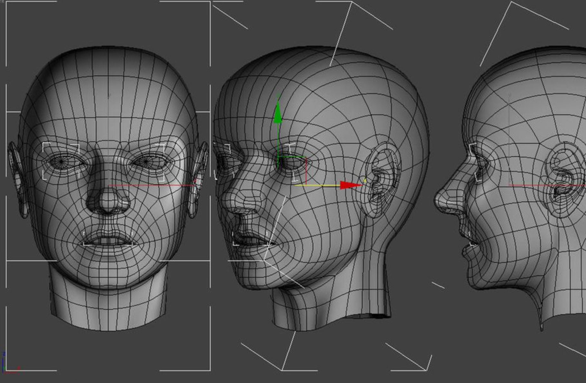
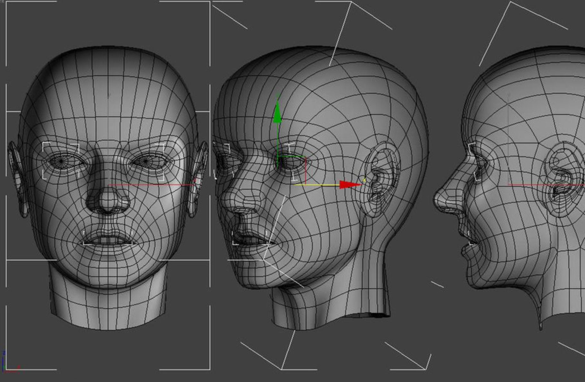

Philips Respironics Mask Selector 3D
 



Philips Respironics Mask Selector 3D
Philips Respironics Mask Selector 3D is rooted in science and data.
This touch-free solution will help patient’s therapist fit with the right mask.
The mask solution utilized Orbbec 3D camera to take 150 pictures of patient’s face
in 20s, 100,000 key data points of facial geometry is taken from each picture, totaling 15 million data points.
The software then identifies the 46,200 points most critical to determining an
accurate and recommend to help patient fit the right mask.
Our similar concept has been widely used for other healthcare application like body
scanning for physical training.